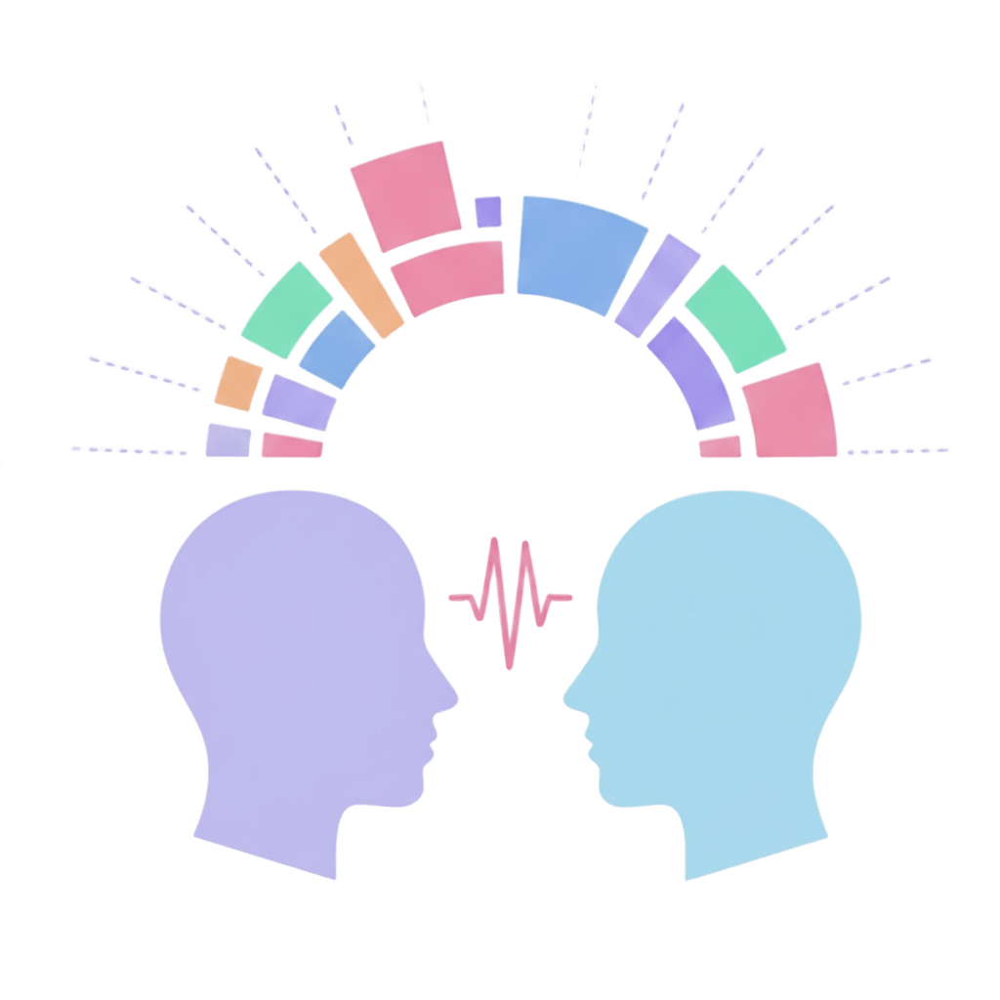
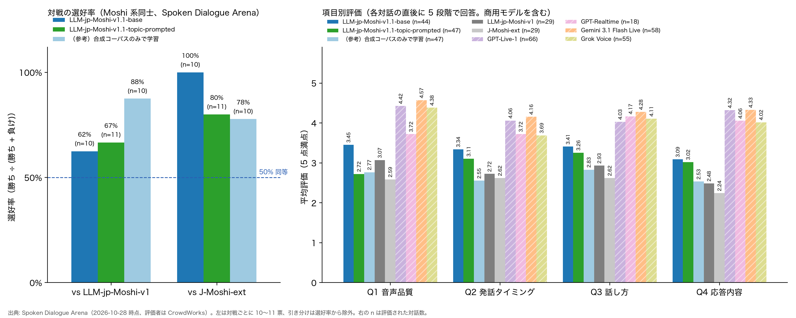

🤗 v1.1-base 🤗 v1.1-topic-prompted | GitHub | LLM-jp-Moshi-v1 のページ LLM-jp-Moshi-v1 page
国立情報学研究所 大規模言語モデル研究開発センター 対話ワーキンググループ
Dialogue Working Group, Research and Development Center for Large Language Models, National Institute of Informatics
LLM-jp-Moshi-v1.1 は，LLM-jp-Moshi-v1 と同じ J-CHAT 事前学習チェックポイントから，LLM-jp で独自に構築した日本語の合成対話コーパス（15 話題，約 4,000 時間）と LLM-jp-Zoom1 を用いて追加学習したモデル群です． 合成対話コーパスの音声は，LLM-jp-Zoom1 でファインチューニングした音声合成モデルで生成しています． このページでは，各モデルとユーザによる実際の音声対話のデモ動画と，Spoken Dialogue Arena による評価結果を紹介します． モデルの詳細と使い方は GitHub をご覧ください． LLM-jp-Moshi-v1.1 is a family of models trained from the same J-CHAT pre-training checkpoint as LLM-jp-Moshi-v1, with additional training on a large-scale Japanese synthetic dialogue corpus built in-house by LLM-jp (15 everyday topics, approx. 4,000 hours) and LLM-jp-Zoom1. The speech in the synthetic corpus was generated with a text-to-speech model fine-tuned on LLM-jp-Zoom1. This page presents demo videos of real-time spoken dialogue between each model and users, and evaluation results from the Spoken Dialogue Arena. See GitHub for model details and usage.
J-CHAT で事前学習したチェックポイントから，合成対話コーパス（約 4,000 時間）と LLM-jp-Zoom1 を混ぜて追加学習したモデル．
Additionally trained on the synthetic dialogue corpus (approx. 4,000 hours) mixed with LLM-jp-Zoom1, starting from the J-CHAT pre-training checkpoint.
🤗 Hugging Face合成対話コーパスと LLM-jp-Zoom1 に話題のテキストプロンプトを付与して追加学習したモデル．対話の冒頭で話題を与えると，その話題から雑談を始めます．
Additionally trained on the synthetic corpus and LLM-jp-Zoom1 with topic text prompts. Given a topic at the beginning of a dialogue, the model starts chatting about it.
🤗 Hugging FaceSpoken Dialogue Arena の対話画面で，ユーザが各モデルと実時間で対話した様子です（2026 年 10 月収録）． 上段（AI）がモデル，下段（Human）がユーザの音声波形で，中央の文字はモデルの内部テキストストリームです．
Users talking with each model in real time on the Spoken Dialogue Arena interface (recorded in October 2026). The upper waveform (AI) is the model, the lower one (Human) is the user, and the text in the middle is the model's internal text stream.
同梱の推論サーバで，話題のプリセット（15 話題）を選んで「接続」を押すと，モデルがその話題から話し始めます． プロンプトの選択から話し始めまでを収録したものです．
With the bundled inference server, select one of the 15 preset topics and press "接続" (connect); the model then starts the conversation on that topic. These clips show the steps from selecting the prompt to the model's first utterance.
Spoken Dialogue Arena は，評価者が 2 つの音声対話モデルと順に 2 分以上対話し，どちらが良かったかを選ぶ対戦型の評価基盤です． 評価者にはモデル名を伏せ，各対話の直後に音声品質・発話タイミング・話し方・応答内容の 4 項目を 5 段階で回答してもらいます． 評価者はクラウドソーシング（CrowdWorks）で募集した日本語話者です． 左図は LLM-jp-Moshi-v1 および J-Moshi-ext との対戦における選好率（勝ち ÷（勝ち + 負け），引き分けは除外），右図は 4 項目の平均評価で，商用の full-duplex 音声対話モデルも併記しています．
The Spoken Dialogue Arena is a pairwise evaluation platform: each evaluator talks with two spoken dialogue models for at least two minutes each and chooses the better one. Model names are hidden, and after each conversation the evaluator rates four aspects (audio quality, turn-taking timing, speaking style, response content) on a 5-point scale. Evaluators are Japanese speakers recruited via crowdsourcing (CrowdWorks). The left panel shows preference rates against LLM-jp-Moshi-v1 and J-Moshi-ext (wins ÷ (wins + losses), ties excluded); the right panel shows the mean ratings of the four aspects, including commercial full-duplex models for reference.

2026 年 10 月 29 日時点．対戦は各対 10〜11 票，右図の n は評価された対話数．票数が少ないため，1 票で選好率が約 10 ポイント動くことに注意してください． 「（参考）合成コーパスのみで学習」は，LLM-jp-Zoom1 を混ぜずに合成対話コーパスだけで追加学習した比較用のモデルで，公開はしていません．
As of October 29, 2026. Each pairing has 10–11 votes; n in the right panel is the number of rated conversations. Note that with this few votes, a single vote shifts the preference rate by about 10 points. "（参考）合成コーパスのみで学習" (reference: synthetic corpus only) is an unreleased comparison model additionally trained on the synthetic dialogue corpus without LLM-jp-Zoom1.
This page was adapted from the SoundStorm project page.